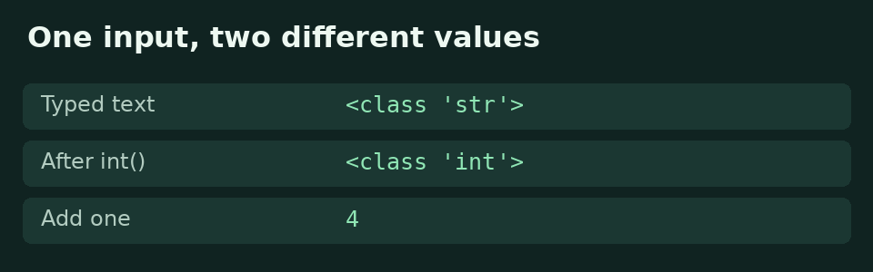

Variables, data types & strings
Northwind needs to connect three data sources. Each one takes about two and a half minutes. You’ll write a small kickoff tool that turns that note into a 7.5-minute estimate your teammate can read.
Start here. In the same python-practice folder from the setup lesson, create kickoff.py. Paste one example at a time, save it and run the same file. The examples replace each other until you build the complete tool.
uv run python kickoff.pyRun without uv
On Windows, use py -3 kickoff.py or python kickoff.py if that’s the command that worked during setup. On macOS or Linux, use python3 kickoff.py.
Name and update a value
A variable is a name you can use to refer to a value. In source_count = 3, source_count is the name and 3 is the value. = assigns the value on the right to the name on the left.
Northwind adds a data source during the call. What will the last line print?
customer = "Northwind"
source_count = 3
source_count = source_count + 1
print(customer, "has", source_count, "data sources.")Northwind has 4 data sources.Python uses the old value of source_count on the right, adds one and assigns 4 to the same name. print() puts spaces between the pieces you give it.
A type describes the kind of value Python has. The quotes in "Northwind" make it a string. Quotes around "007" keep its leading zeros as part of an ID.
| Kind of value | Example from the kickoff |
|---|---|
str · Text | customer = "Northwind" |
int · Whole number | source_count = 3 |
float · Number with a decimal part | minutes_per_source = 2.5 |
bool · True or false | approved = False records that approval has yet to be received. |
NoneType · Missing value | review_id = None records that no review ID has been assigned. |
Checkpoint. Explain why 3 + 1 gives 4 and "3" + "1" gives "31".
Choose names your teammate can read
Use names that say what the value represents, such as source_count or minutes_per_source.
Which names work? ticket_count, ticket2 or 2tickets
ticket_count and ticket2 work. A name can start with a letter or underscore and contain digits after that. 2tickets starts with a digit, so Python raises SyntaxError. Keywords such as if are reserved. Joining lowercase words with underscores is called snake_case.
Read input and convert it
Replace the previous example with this one and run the file. When you see Data sources:, type 3 and press Enter. Predict which line reports str and which reports int.
raw_count = input("Data sources: ")
source_count = int(raw_count)
print(type(raw_count))
print(type(source_count))
print(source_count + 1)
type() printed before and after conversion. The last row shows the result of adding one.input() gives you text. Use int() for a whole-number count and float() for an estimate like 2.5. Use str() if you want to turn a number into text. The text "007" should stay text when it’s an ID.
Checkpoint. When you enter 3, the last line prints 4. Point to the line that makes the arithmetic possible.
Format a one-line estimate
Now practice printing the result with fixed values. The f before the quote lets Python put a value into each pair of braces.
customer = "Northwind"
estimated_minutes = 3 * 2.5
print(f"{customer} | {estimated_minutes:.1f} minutes")Northwind | 7.5 minutes:.1f displays one decimal place. Change it to :.2f and predict the output before running it. The displayed result becomes 7.50. The value stored in estimated_minutes remains 7.5.
Optional homework: compare f-strings with str.format()
You may see str.format() in existing code. The placeholder {:.1f} uses the first supplied argument and shows one decimal place, just like the f-string above.
print("Northwind | {:.1f} minutes".format(7.5))Northwind | 7.5 minutesChange the number to 2 and predict the text. The number itself stays an integer.
Build the kickoff tool
Put the steps together in kickoff.py. Save and run the same command. At each prompt, type one value and press Enter. Use Northwind, then 3, then 2.5. Predict the total before the last Enter.
# Ask for the customer name and trim spaces from the ends.
customer = input("Customer: ").strip()
# input() gives text. Convert the source count to a whole number.
source_count = int(input("Data sources: "))
# A time estimate can include a decimal part.
minutes_per_source = float(input("Minutes per source: "))
# Start with approval pending and no review ID assigned.
approved = False
review_id = None
# Calculate the estimate from the count and time per source.
estimated_minutes = source_count * minutes_per_source
# Print the estimate to one decimal place, then show the approval status.
print(f"{customer} | {source_count} sources | {estimated_minutes:.1f} minutes")
print(f"Approved: {approved} | Review ID: {review_id}")
.strip()trims extra spaces from the customer name.int()andfloat()turn the other two inputs into numbers.- Python calculates
3 * 2.5before printing. Theftells Python to fill each pair of braces with a value.:.1fdisplays one decimal place. Falserecords that approval hasn’t been received.Nonerecords that there’s no review ID. Changing the estimate doesn’t change either field.
Change it and debug it
Run it for Acme with 4 sources at 7.5 minutes each. Now add a line that shows Estimate: 0.50 hours. Use the value you already calculated.
Check your answer
# There are 60 minutes in an hour.
print(f"Estimate: {estimated_minutes / 60:.2f} hours")Now type 3.0 at Data sources. Look for ValueError at the start of the last line. That input is decimal text, so int() rejects it. Run again with 3. We’ll handle invalid input in a later lesson.
Two quick checks. If your output shows {customer}, check the f before the quote. If you try bool("False"), it returns True because the text isn’t empty.
Clean a support message
Optional extension. Open this once you can run the kickoff tool.
Show the string-cleanup exercise
A teammate enters " Ticket_0042 OPEN ". The report needs ticket-0042 | open. Save this as clean_message.py and run it like the earlier examples. Predict how many pieces split() will return.
raw = " Ticket_0042 OPEN "
# Keep the cleaned text and split it into fields.
clean = raw.strip().lower().replace("_", "-")
fields = clean.split()
print(fields)
print(" | ".join(fields))
# The ID starts after "ticket-". Keep it as text to preserve the zeros.
ticket_id = fields[0][7:]
print(ticket_id)Expected output
['ticket-0042', 'open']
ticket-0042 | open
0042strip() trims the ends. lower() and replace() return new strings. split() with no separator groups consecutive whitespace. The separator goes before .join() and is placed between the strings. The slice [7:] starts at index 7 and reads through the end.
Try joining text and a number
" | ".join(["open", 2]) raises TypeError. Convert the number with str(2) first. For two fields whose meaning you already know, an f-string such as f"{status} | {count}" is also a good fit.
status = "open"
count = 2
print(" | ".join([status, str(count)]))
print(f"{status} | {count}")Expected output
open | 2
open | 2Triple quotes let a string span several lines. Use # for comments. A string at the start of a function can serve as its docstring.
Practice in the eight bootcamp projects
Once your kickoff tool works, choose one project to practice transferring the skill. The examples below each start with a different request from a teammate.
Capstone 01 · OmniGuard
A customer asks how long it will take to connect four data sources. Each one takes about 7.5 minutes. You need one short estimate you can read back on the kickoff call. Use an integer for the number of sources and a float for the time per source.
Write and run the code
# Give each part of the estimate a name.
customer = "Acme"
source_count = 4
minutes_per_source = 7.5
# Multiply the count by the time for one source.
estimated_minutes = source_count * minutes_per_source
print(f"{customer} | {source_count} sources | {estimated_minutes:.1f} minutes")Line-by-line explanation
# Give each part of the estimate a name.Comment for the reader. Python skips this line.
customer = "Acme"Store 'Acme' in
customer.source_count = 4Store 4 in
source_count.minutes_per_source = 7.5Store 7.5 in
minutes_per_source.# Multiply the count by the time for one source.Comment for the reader. Python skips this line.
estimated_minutes = source_count * minutes_per_sourceFor
estimated_minutes, multiply source count by minutes per source and store the result.print(f"{customer} | {source_count} sources | {estimated_minutes:.1f} minutes")Display text formatted with customer, source count, estimated minutes.
Expected terminal output
Acme | 4 sources | 30.0 minutesCapstone 02 · AuditMesh
A compliance case goes to the next reviewer. The case is called 007, three checks have been completed and a review ID hasn’t been assigned. Keep the case ID as text so its zeros survive. Use None for the missing review ID.
Write and run the code
# This is an identifier, so keep the leading zeros.
case_id = "007"
checks_completed = 3
# No one has assigned a review ID yet.
review_id = None
print(f"{case_id} | {checks_completed} checks | Review ID: {review_id}")Line-by-line explanation
# This is an identifier, so keep the leading zeros.Comment for the reader. Python skips this line.
case_id = "007"Store '007' in
case_id.checks_completed = 3Store 3 in
checks_completed.# No one has assigned a review ID yet.Comment for the reader. Python skips this line.
review_id = NoneStore None in
review_id.print(f"{case_id} | {checks_completed} checks | Review ID: {review_id}")Display text formatted with case id, checks completed, review id.
Expected terminal output
007 | 3 checks | Review ID: NoneProject 03 · Self-host an LLM
You run a speed test after deploying a model. The tool reports an average of 12.5 requests per second. Save it as a number so you can compare it with another run later.
Write and run the code
# input() gives text. A rate can include a decimal part.
requests_per_second = float(input("Requests per second: "))
# Use one decimal place in the benchmark note.
print(f"Throughput: {requests_per_second:.1f} requests/sec")Line-by-line explanation
# input() gives text. A rate can include a decimal part.Comment for the reader. Python skips this line.
requests_per_second = float(input("Requests per second: "))For
requests_per_second, read a response and convert it to a floating-point number and store the result.# Use one decimal place in the benchmark note.Comment for the reader. Python skips this line.
print(f"Throughput: {requests_per_second:.1f} requests/sec")Display text formatted with requests per second.
Expected terminal output
Requests per second: 12.5
Throughput: 12.5 requests/secProject 04 · Run an LLM on mobile devices
Before a phone test, the battery is at 80.0%. After the test, it’s at 77.5%. Tell the team how many percentage points the test used. Use floats because both readings can include decimals.
Write and run the code
# Store the two battery readings from the same phone.
battery_before = 80.0
battery_after = 77.5
# Subtract the after reading from the before reading.
battery_drop = battery_before - battery_after
print(f"Battery drop: {battery_drop:.1f} percentage points")Line-by-line explanation
# Store the two battery readings from the same phone.Comment for the reader. Python skips this line.
battery_before = 80.0Store 80.0 in
battery_before.battery_after = 77.5Store 77.5 in
battery_after.# Subtract the after reading from the before reading.Comment for the reader. Python skips this line.
battery_drop = battery_before - battery_afterFor
battery_drop, subtract battery after from battery before and store the result.print(f"Battery drop: {battery_drop:.1f} percentage points")Display text formatted with battery drop.
Expected terminal output
Battery drop: 2.5 percentage pointsProject 05 · Multimodal document intelligence
You’re preparing an upload that contains four documents. The import tool needs the count for its status line. A document count is a whole number, so convert the typed text with int().
Write and run the code
# Convert the typed count before storing it in the import record.
document_count = int(input("Documents in this upload: "))
# Show the count so the operator can check it before importing.
print(f"Ready to import {document_count} documents")Line-by-line explanation
# Convert the typed count before storing it in the import record.Comment for the reader. Python skips this line.
document_count = int(input("Documents in this upload: "))For
document_count, read a response and convert it to a whole number and store the result.# Show the count so the operator can check it before importing.Comment for the reader. Python skips this line.
print(f"Ready to import {document_count} documents")Display text formatted with document count.
Expected terminal output
Documents in this upload: 4
Ready to import 4 documentsProject 06 · Enterprise lead management
A salesperson pastes the lead ID 0042 from the CRM and types that two follow-ups are due. Remove the extra spaces from the ID. Convert the follow-up count so it can also be used in a team total.
Write and run the code
# Trim spaces without removing the zeros from the ID.
lead_id = input("Lead ID: ").strip()
# The follow-up count is a number we can add.
follow_ups = int(input("Follow-ups due: "))
print(f"{lead_id} | {follow_ups} follow-ups")Line-by-line explanation
# Trim spaces without removing the zeros from the ID.Comment for the reader. Python skips this line.
lead_id = input("Lead ID: ").strip()For
lead_id, trim whitespace from both ends of the text and store the result.# The follow-up count is a number we can add.Comment for the reader. Python skips this line.
follow_ups = int(input("Follow-ups due: "))For
follow_ups, read a response and convert it to a whole number and store the result.print(f"{lead_id} | {follow_ups} follow-ups")Display text formatted with lead id, follow ups.
Expected terminal output
Lead ID: 0042
Follow-ups due: 2
0042 | 2 follow-upsProject 07 · AI receptionist
The receptionist is setting up a new call record. The call hasn’t been answered and there’s no booking ID. Use False for the known no and None for the value you don’t have yet.
Write and run the code
# A Boolean records whether the call was answered.
call_answered = False
# A booking ID appears only after a booking is created.
booking_id = None
print(f"Answered: {call_answered} | Booking ID: {booking_id}")Line-by-line explanation
# A Boolean records whether the call was answered.Comment for the reader. Python skips this line.
call_answered = FalseStore False in
call_answered.# A booking ID appears only after a booking is created.Comment for the reader. Python skips this line.
booking_id = NoneStore None in
booking_id.print(f"Answered: {call_answered} | Booking ID: {booking_id}")Display text formatted with call answered, booking id.
Expected terminal output
Answered: False | Booking ID: NoneProject 08 · AI Voice Productivity SaaS
A user is about to process three clips for a demo. Each clip is 12.5 seconds long. Show the expected total duration before they start the job. The number of clips is an integer, but the length is a float.
Write and run the code
# Keep the count and time per clip separate.
clip_count = 3
seconds_per_clip = 12.5
# Multiply to get the combined duration for this batch.
total_seconds = clip_count * seconds_per_clip
print(f"Total: {total_seconds:.1f} seconds")Line-by-line explanation
# Keep the count and time per clip separate.Comment for the reader. Python skips this line.
clip_count = 3Store 3 in
clip_count.seconds_per_clip = 12.5Store 12.5 in
seconds_per_clip.# Multiply to get the combined duration for this batch.Comment for the reader. Python skips this line.
total_seconds = clip_count * seconds_per_clipFor
total_seconds, multiply clip count by seconds per clip and store the result.print(f"Total: {total_seconds:.1f} seconds")Display text formatted with total seconds.
Expected terminal output
Total: 37.5 secondsSay it out loud
Imagine an interviewer hands you "007" and calls it a case ID. Which type would you use and why? Then explain what happens when someone types 0 or oops as the source count.
Compare your reasoning
Keep the ID as text. Converting it to an integer drops the leading zeros. 0 converts successfully, so ask whether zero sources is allowed. oops fails at conversion. Test a normal input, zero and invalid text.
Google’s mock coding interview demonstrates explaining your thinking. Amazon’s interview guide includes testing edge cases.
Five situations you might see on the job
Open a scenario and try the task. Then reveal the solution, run it and compare the output.
1. Enterprise Lead Management
Two sales reps report "2" and "3" follow-ups for the same lead. Combine the counts for a team handoff. Keep lead ID "0042" as text.
Show commented solution and output
# Keep the CRM identifier as text so its zeros survive.
lead_id = "0042"
# Convert both reports before adding their counts.
total_follow_ups = int("2") + int("3")
print(f"Lead {lead_id} | {total_follow_ups} follow-ups")Line-by-line explanation
# Keep the CRM identifier as text so its zeros survive.Comment for the reader. Python skips this line.
lead_id = "0042"Store '0042' in
lead_id.# Convert both reports before adding their counts.Comment for the reader. Python skips this line.
total_follow_ups = int("2") + int("3")For
total_follow_ups, add int('2') to int('3') and store the result.print(f"Lead {lead_id} | {total_follow_ups} follow-ups")Display text formatted with lead id, total follow ups.
Expected output
Lead 0042 | 5 follow-ups2. Self-hosted LLM capacity estimate
An infrastructure teammate reports "3" workers and "12.5" requests per second for each worker. Calculate the combined estimate.
Show commented solution and output
# Use an integer for a count and a float for a rate.
workers = int("3")
rate_per_worker = float("12.5")
# Multiply the count by the rate. This is a planning estimate.
estimated_rate = workers * rate_per_worker
print(f"Estimated capacity: {estimated_rate:.1f} requests/sec")Line-by-line explanation
# Use an integer for a count and a float for a rate.Comment for the reader. Python skips this line.
workers = int("3")For
workers, convert '3' to a whole number and store the result.rate_per_worker = float("12.5")For
rate_per_worker, convert '12.5' to a floating-point number and store the result.# Multiply the count by the rate. This is a planning estimate.Comment for the reader. Python skips this line.
estimated_rate = workers * rate_per_workerFor
estimated_rate, multiply workers by rate per worker and store the result.print(f"Estimated capacity: {estimated_rate:.1f} requests/sec")Display text formatted with estimated rate.
Expected output
Estimated capacity: 37.5 requests/sec3. AuditMesh approval handoff
A form only sends yes or no, sometimes with spaces or capitals. Convert " NO " into a Boolean before sharing the record.
Show commented solution and output
# Clean the text before checking the answer.
approval_text = " NO ".strip().lower()
# Compare the answer itself. bool("no") would be True.
approved = approval_text == "yes"
print(f"Approved: {approved}")Line-by-line explanation
# Clean the text before checking the answer.Comment for the reader. Python skips this line.
approval_text = " NO ".strip().lower()For
approval_text, call ' NO '.strip().lower and store the result.# Compare the answer itself. bool("no") would be True.Comment for the reader. Python skips this line.
approved = approval_text == "yes"Store approval_text == 'yes' in
approved.print(f"Approved: {approved}")Display text formatted with approved.
Expected output
Approved: False4. AI Receptionist shift update
The queue has zero waiting calls and no booking has been created. Use the right value for each field, then print a status update.
Show commented solution and output
# Zero is a known count. None means a booking ID is missing.
waiting_calls = 0
booking_id = None
print(f"Waiting calls: {waiting_calls}")
print(f"Booking ID: {booking_id}")Line-by-line explanation
# Zero is a known count. None means a booking ID is missing.Comment for the reader. Python skips this line.
waiting_calls = 0Store 0 in
waiting_calls.booking_id = NoneStore None in
booking_id.print(f"Waiting calls: {waiting_calls}")Display text formatted with waiting calls.
print(f"Booking ID: {booking_id}")Display text formatted with booking id.
Expected output
Waiting calls: 0
Booking ID: None5. Voice Productivity usage report
A voice tool records 72.75 seconds. Show minutes to two decimal places in the report and check the original calculated value.
Show commented solution and output
# Calculate the duration in minutes before formatting it.
seconds = float("72.75")
minutes = seconds / 60
# Format the report. The number stored in minutes stays the same.
print(f"Displayed minutes: {minutes:.2f}")
print(f"Stored minutes: {minutes}")Line-by-line explanation
# Calculate the duration in minutes before formatting it.Comment for the reader. Python skips this line.
seconds = float("72.75")For
seconds, convert '72.75' to a floating-point number and store the result.minutes = seconds / 60For
minutes, divide seconds by 60 and store the result.# Format the report. The number stored in minutes stays the same.Comment for the reader. Python skips this line.
print(f"Displayed minutes: {minutes:.2f}")Display text formatted with minutes.
print(f"Stored minutes: {minutes}")Display text formatted with minutes.
Expected output
Displayed minutes: 1.21
Stored minutes: 1.2125Tricky questions
Predict the result and explain your reason before opening the answer. Then check in Python.
1. What happens when you run int("3.0") or int(3.9)?
The first raises ValueError because "3.0" isn’t integer text. The second returns 3 because converting a float to an integer drops its fractional part.
2. Does int("-2") fail for a data-source count?
It converts successfully to -2. You still need a separate rule to reject a negative count.
3. What do bool("False") and bool("") return?
True and False. The first string contains characters, even though those characters spell False.
4. If booking_id = None, is it the same type as "None"?
No. None has type NoneType. "None" has type str.
5. If name = "Mia", what does print("Hello {name}") show?
It shows Hello {name}. Add f before the opening quote to get Hello Mia.
6. If n = 2.567, what is f"{n:.1f}" and what is still stored in n?
The expression gives the string "2.6". n is still the float 2.567.
7. What does 3 * "2.5" give?
The string "2.52.52.5". Python repeats the text. 3 * float("2.5") gives the number 7.5.
8. Will 0.1 + 0.2 == 0.3 print True?
No. It prints False because floats store many decimal fractions approximately. Display formatting can hide the difference.
Build an AuditMesh handoff from scratch
Imagine the next reviewer is waiting for your estimate. Create audit_handoff.py and write the program before opening the solution. Ask for a case ID, the number of checks left and the time per check in minutes. Keep the ID as text, calculate the estimate and print it to two decimal places. Include False for review complete and None for the missing review ID.
- Normal run. Type
007,4and1.25. Your output should keep007and show5.00 minutes. - Nothing left to check. With
001,0and1.25, keep001and report0.00 minutes. - Wrong input. Type
fourfor the count. Point to the conversion that fails and explain why you getValueError. Handling the error comes later.
Reveal the commented solution
# Keep the case ID as text so 007 stays 007.
case_id = input("Case ID: ").strip()
# Convert the count and the time before doing the calculation.
checks_remaining = int(input("Checks remaining: "))
minutes_per_check = float(input("Minutes per check: "))
estimated_minutes = checks_remaining * minutes_per_check
# The review hasn't been completed or assigned an ID yet.
review_complete = False
review_id = None
print(f"Case {case_id} | Checks left: {checks_remaining}")
print(f"Estimate: {estimated_minutes:.2f} minutes")
print(f"Review complete: {review_complete} | Review ID: {review_id}")Output for the normal run
Case 007 | Checks left: 4
Estimate: 5.00 minutes
Review complete: False | Review ID: NoneYou’re ready for the next lesson when you can build the handoff without copying, run all three tests and explain why the ID stays text.